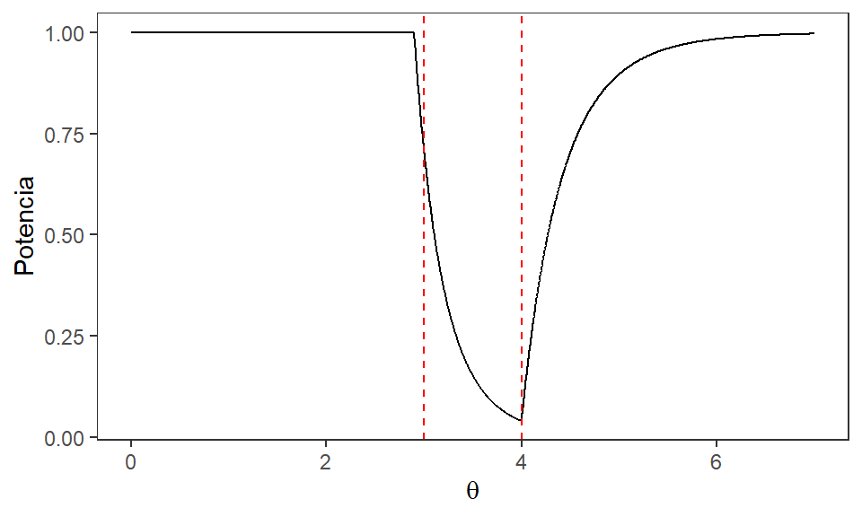

Contraste de hipótesis1
![]()
¿Qué vamos a discutir hoy?
Contrastes de hipótesis - introducción
Contrastes de hipótesis
Tenemos un parámetro \(\theta\) que es desconocido pero podemos decir que pertenece a un espacio paramétrico \(\Omega\); este espacio incluye todos los posibles valores que \(\theta\) podría tomar. Suponga que dividimos \(\Omega\) en dos subconjuntos disjuntos \(\Omega_0\) y \(\Omega_1\) tales que:
\[\Omega_{0} \cap \Omega_{1} = \emptyset~~~~~ \wedge~~~~~ \Omega_{0} \cup \Omega_{1} = \Omega.\]
Si dividimos \(\Omega\) de esta manera entonces es de esperar que \(\theta\) se encuentre en \(\Omega_{0}\) o en \(\Omega_{1}\) (no puede estar en los dos al mismo tiempo).
Así, podemos tener:
- una hipótesis nula tal que \(H_{0}: \theta \in \Omega_{0}\)
- y una hipótesis alternativa tal que \(H_{1}: \theta \in \Omega_{1}\).
El procedimiento que sigue consiste en contrastar estas hipótesis mediante una regla de decisión que favorece una hipótesis sobre la otra al cumplirse cierta condición y viceversa si la condición no se cumple.

Método ciéntífico
Dos posibles resultados:
- Rechazar la hipótesis nula o
- No rechazar la hipótesis nula.
Nunca decimos que se acepta la hipótesis nula ya que es imposible que un experimento confirme una hipótesis. Sin embargo, si encontramos suficiente evidencia que sugiere que una hipótesis sea falsa podemos rechazar la hipótesis. No obstante, por simplicidad, en el resto de este tema cuando mencione que se acepta \(H_0\) se entenderá como no se rechaza \(H_0\).
Ejemplo:
Supongamos que tenemos datos que provienen de una población Normal con media desconocida \(\mu\) y variancia 1.
\(\mu\) puede tomar solamente dos valores: \(\mu = 1\) y \(\mu = -1\).
De este modo tenemos las hipótesis \(H_{0}: \mu = 1\) y \(H_{1}: \mu = -1\). Como con el método científico nuestro siguiente paso consiste en obtener datos y observar cuál de estas dos hipótesis es la más factible para los datos observados.
En un ejemplo como este esperaríamos que si \(H_{0}\) es cierto entonces hayan más datos positivos que negativos y que si \(H_{1}\) es cierto entonces hayan más datos negativos que positivos.
Supongamos que resumimos los datos de la muestra en el estadístico \(\bar{X}\) y comparamos este valor contra un valor \(k\) de manera que si \(\bar{X}\) es mayor a \(k\) entonces preferimos \(H_{0}\) mientras que si \(\bar{X}\) es menor a \(k\) entonces preferimos a \(H_{1}\), o como decimos usualmente, rechazamos \(H_{0}\).
Nótese que existe toda una región de posibles valores de \(\bar{X}\) donde podemos rechazar \(H_{0}\); esta región se llama la región crítica del contraste.
Definición 4.1: Región crítica. Consideremos las hipótesis \(H_{0}: \theta \in \Omega_{0}\) y \(H_{1}: \theta \in \Omega_{1}\). Sea \(X_{1}, X_{2}, ... , X_{n}\) una muestra aleatoria seleccionada sobre una distribución con parámetros desconocido \(\theta\). Sea \(S\) el espacio muestral para el vector aleatorio n-dimensional \(\textbf{X} = \left\lbrace X_{1}, X_{2}, ... , X_{n} \right\rbrace\) es decir, \(S\) es el resultado de todas las posibles muestras aleatorias de tamaño \(n\). Sea \(\delta\) un contraste que consiste en dividir el espacio muestral \(S\) en dos subconjuntos, el primero de ellos contiene los valores de \(\textbf{X}\) para los cuales se rechaza \(H_{0}\) y se denomina como la región crítica del contraste, denotada como \(RC_{\delta}\).
- En los contrastes de hipótesis con los que acostumbramos trabajar solemos definir la región crítica en términos del estadístico de prueba.
- En el ejemplo que veníamos discutiendo anteriormente el estadístico de prueba es el que se usa en el contraste para resumir la información de la muestra es decir, \(\bar{X}\). La región crítica se define como todos los valores de \(\bar{X}\) que sean menores a \(k\).
- El valor \(k\) es el valor que separa la región crítica de la región donde no rechazamos \(H_{0}\), llamada la región crítica complemento (denotada como \(RC_{\delta}^c\)); por su parte el valor de \(k\) se llama el valor crítico del contraste. Pueden existir contrastes con más de un valor crítico.
Dos características que tienen los contrastes: la potencia y el tamaño. El enfoque está en encontrar un “buen” contraste según estas características. A continuación se define la potencia de la prueba:
Definición 4.2: Función potencia. Sea \(X_{1}, X_{2}, ... , X_{n}\) una muestra aleatoria de una población con parámetro desconocido \(\theta\) y sea \(RC_{\delta}\) la región crítica de un contraste \(\delta\) respecto a \(\theta\). La potencia del contraste, denotada \(\operatorname{Potencia}_\delta(\theta)\), es la probabilidad que el contraste \(\delta\) indique rechazar \(H_{0}\) para un valor dado de \(\theta\): \[\operatorname{Potencia}_\delta(\theta)=\operatorname{Potencia}(\theta) = P(\textbf{X} \in RC | \theta).\]
- La función potencia nos da la probabilidad de que el estadístico de prueba se encuentre en la región crítica para un valor dado de \(\theta\).
- Un contraste ideal, pero imposible en la práctica, sería tal que siempre rechace \(H_{0}\) cuando este es falso y que no lo rechace cuando es cierto. Es decir,
- queremos que la Potencia para valores de \(\theta\) en \(\Omega_{0}\) sea cero,
- mientras que para valores de \(\theta\) en \(\Omega_{1}\) queremos que la Potencia sea uno.
- De este modo estamos tomando la decisión correcta el \(100\%\) de las veces.
- En la práctica queremos tener un contraste que tenga una función potencia lo más parecida a la función de potencia ideal.
Ejemplo: Sea \(X_{1}, X_{2}, ... , X_{4}\) una muestra aleatoria de una población Normal con media desconocida \(\mu\) y variancia 1. Suponga que se tienen las hipótesis \(H_{0}: \mu = 1\) y \(H_{1}: \mu = -1\).
Para contrastar estas hipótesis se va a rechazar \(H_{0}\) si \(\left\lbrace \bar{X}<0\right\rbrace\). Obtenga la función potencia para todos los valores de \(\mu\) dentro de \(\Omega\).
Solución: En este caso todo el espacio paramétrico \(\Omega\) se compone solo por dos valores de \(\mu\): \(\mu = 1\) y \(\mu = -1\). Por lo tanto debemos calcular la Potencia para cada uno de estos valores. Empezaremos por la Potencia en \(\mu = 1\):
\(\operatorname{Potencia}(1) = P(\bar{X} < 0 | \mu = 1) = P\left( \frac{\bar{X} - 1}{\frac{1}{\sqrt{4}}} < \frac{0 - 1}{\frac{1}{\sqrt{4}}} \right) = P(Z < -2) \approx 0.023\)
Seguimos con la Potencia para \(\mu = -1\):
\(\operatorname{Potencia}(-1) = P(\bar{X} < 0 | \mu = -1) = P\left( \frac{\bar{X} + 1}{\frac{1}{\sqrt{4}}} < \frac{0 + 1}{\frac{1}{\sqrt{4}}} \right) = P(Z < 2) \approx 0.977\)
- Podríamos interpretar el primer valor diciendo que para este contraste la probabilidad de rechazar la hipótesis nula cuando esta es cierta es de 0.023,
- Mientras que el segundo valor se puede interpretar diciendo que la probabilidad de rechazar la hipótesis nula cuando esta es falsa es de 0.977.
- Podemos ver que tenemos un buen contraste, ya que la probabilidad de cometer una equivocación al tomar nuestra decisión es muy baja.
Nota: Por coincidencia las dos probabilidades suman 1, pero no pasa siempre.
Error Tipo I y Error Tipo II
Nótese que en cualquier contraste de hipótesis podemos tener cuatro posibles resultados:
| \(H_0\) cierto | \(H_0\) falso | |
|---|---|---|
| Aceptar \(H_0\) | Acierto | Error Tipo II |
| Rechazar \(H_0\) | Error Tipo I | Acierto |

Error Tipo I y Error Tipo II
Podemos definir la probabilidad de cometer estos dos tipos de errores en términos de la función potencia:
Definición 4.3. Probabilidad de Error Tipo I y Error Tipo II: Para un espacio paramétrico \(\Omega\), dividido en dos subconjuntos disjuntos \(\Omega_0\) y \(\Omega_1\), de un parámetro \(\theta\), se define la probabilidad de cometer el error tipo I, denotada como \(\alpha(\delta)\) como: \[\alpha(\delta) = P(\text{rechazar } H_{0} \text{ cuando } H_{0} \text{ es cierta}) \] \[= P\left( \textbf{X} \in RC_{\delta} | \theta \in \Omega_0 \right) = \operatorname{Potencia}\left(\theta | \theta \in \Omega_0 \right).\]
Por otra parte la probabilidad de cometer el error tipo II, denotada como \(\beta(\delta)\), se define como:
\[\beta(\delta) = P(\text{no rechazar } H_{0} \text{ cuando} H_{0} \text{ es falsa} ) = P\left( \textbf{X} \in RC_{\delta}^{c} | \theta \in \Omega_1 \right)\] \[= 1 - P\left( \textbf{X} \in RC_{\delta} | \theta \in \Omega_1 \right) = 1 - \operatorname{Potencia}(\theta |\theta \in \Omega_1 ).\]
De la definición quedan claro algunos puntos sobre la probabilidad de Error Tipo I y la probabilidad de Error Tipo II.
Primero, podemos ver que estos son funciones de \(\theta\); vamos a tener valores distintos de estas probabilidades dependiendo del valor de \(\theta\) que estemos evaluando. Nótese en la Figura 1 todo aquello antes de la línea punteada corresponde a \(\Omega_0\), por lo tanto la curva que está en ese dominio pertenece a \(\alpha(\delta)\).
Segundo, el \(\alpha\) y \(\beta\) no son probabilidades complementarias ya que están definidos en dos regiones distintas de \(\Omega\). No obstante, estos presentan una relación inversamente proporcional, de forma que a medida de que aumenta la probabilidad de cometer un error, disminuye la probabilidad de cometer el otro.
En el ejemplo anterior podemos observar que solo tenemos un valor para la probabilidad de cada tipo de error. En ese caso:
\(\alpha(\delta) = \operatorname{Potencia}(1) = 0.023\)
\(\beta(\delta) = 1 - \operatorname{Potencia}(-1) = 1 - 0.977 = 0.023\)
Nota: Por coincidencia, ambos errores tienen la misma probabilidad. A continuación veremos otra forma de caracterizar un contraste.
Definición 4.4: Tamaño del contraste. Para las hipótesis dadas: \(H_{0}: \theta \in \Omega_{0}\) y \(H_{1}: \theta \in \Omega_{1}\), sea un contraste \(\delta\). Se denomina el tamaño del contraste al valor \(\alpha_c\) dado por: \[\alpha_c = \sup_{\theta \in \Omega_0} \operatorname{Potencia}_\delta(\theta).\] Es decir, el tamaño de un contraste es la máxima probabilidad de cometer un Error Tipo I.
- Para la mayoría de los contrastes su tamaño se va a encontrar en los límites de \(\Omega_{0}\). De no ser ese el caso podríamos derivar \(\alpha(\delta)\) y ver si alcanza algún máximo dentro de su dominio.
Ejemplo: Suponga que se selecciona una muestra aleatoria \(X_{1}, X_{2}, ... , X_{n}\) sobre una distribución Uniforme en \((0,\theta)\), con \(\theta\) desconocido y mayor a cero. Con esta muestra se desea contrastar las hipótesis:
\[H_{0}: 3 \leq \theta \leq 4 \qquad \qquad \ \ \Omega_{0} = \left[3,4\right]\]
\[H_{1}: \theta < 3 \quad o \quad \theta > 4 \qquad \qquad\qquad \Omega_{1} = \left]0,3\right[ \cup \left]4,+\infty\right[\]
En este caso utilizaremos a \(X_{(n)}\) para crear la región crítica. Sabemos que \(X_{(n)}\) es el estimador de máxima verosimilitud de \(\theta\) y que siempre será menor a \(\theta\) (aunque con muestras grandes se va a aproximar mucho). Supongamos que por estas razones vamos a aceptar \(H_0\) si \(2.9 \leq X_{(n)} \leq 3.9\) y se rechaza en caso contrario. Entonces la región crítica del contraste incluye todas las muestras \(\textbf{X}\) para las cuales \(X_{(n)} < 2.9\) o \(X_{(n)} > 3.9\), es decir, \(RC_{\delta} = \left\lbrace \textbf{X} |X_{(n)} \in \textbf{X} \text{ y } X_{(n)} < 2.9 \text{ o } X_{(n)} > 3.9 \right\rbrace\).
Determine una expresión para la función potencia de este contraste.
Solución: Recordemos que la función potencia se define como la probabilidad de rechazar la hipótesis nula, es decir, de que la muestra se encuentre en la región crítica:
\(\operatorname{Potencia}(\theta) = P(\textbf{X} \in RC_{\delta} ) = P\left(X_{(n)} < 2.9 \text{ o } X_{(n)} > 3.9 \right) =\)
\(P\left(X_{(n)} < 2.9\right) + P\left(X_{(n)} > 3.9\right) = F_{X_{(n)}}(2.9) + 1 - F_{X_{(n)}}(3.9)\)
Recordemos que en este caso \(X_{(n)} \sim \operatorname{Potencial}(n,\theta)\), por lo tanto su función de distribución viene dada por:
\[F_{X_{(n)}}(x) = \begin{cases} 0\quad si \quad x \leq 0 \\ \left(\dfrac{x}{\theta}\right)^{n} \quad si\quad 0<x<\theta \\ 1\quad si\quad x \geq \theta \end{cases}\]
La evaluación de la expresión anterior va a depender del valor de \(\theta\), ya que dependiendo de este se va a evaluar la función de distribución en distintos argumentos. En este ejemplo tenemos tres casos distintos:
- Si \(0 < \theta \leq 2.9\):
\(F_{X_{(n)}}(2.9) = 1 \qquad \text{y} \qquad F_{X_{(n)}}(3.9) = 1\)
\(\Rightarrow \operatorname{Potencia}(\theta) = 1 + 1 - 1 = 1\)
- Si \(2.9 \leq \theta \leq 3.9\):
\(F_{X_{(n)}}(2.9) = \left(\dfrac{2.9}{\theta}\right)^{n} \quad \text{y} \quad F_{X_{(n)}}(3.9) = \left(\dfrac{3.9}{\theta}\right)^{n} = 1\)
\(\Rightarrow \operatorname{Potencia}(\theta) = \left(\dfrac{2.9}{\theta}\right)^{n} + 1 - 1 = \left(\dfrac{2.9}{\theta}\right)^{n}\)
- Finalmente, si \(\theta > 3.9\):
\(F_{X_{(n)}}(2.9) = \left(\dfrac{2.9}{\theta}\right)^{n} \quad \text{y} \quad F_{X_{(n)}}(3.9) = \left(\dfrac{3.9}{\theta}\right)^{n}\)
\(\Rightarrow \operatorname{Potencia}(\theta) = \left(\dfrac{2.9}{\theta}\right)^{n} + 1 - \left(\dfrac{3.9}{\theta}\right)^{n}\)
De esta manera podemos resumir la función potencia en la siguiente expresión:
\(\operatorname{Potencia}(\theta) = \begin{cases} 1 \quad si \quad 0 < \theta \leq 2.9 \\ \left(\dfrac{2.9}{\theta}\right)^{n} \quad si \quad 2.9 < \theta \leq 3.9 \\ \left(\dfrac{2.9}{\theta}\right)^{n} + 1 - \left(\dfrac{3.9}{\theta}\right)^{n} \quad si \quad \theta > 3.9 \end{cases}\)
Podemos graficar la forma de esta función para un tamaño de muestra dado. La siguiente figura muestra la forma de la Potencia con \(n = 10\), con \(\Omega_{0}\) delimitado por las líneas rojas punteadas.
- De la Figura anterior podemos detallar que el tamaño de contraste se encuentra cuando \(\theta = 3\). Con \(n = 10\) tenemos que el tamaño del contraste sería: \[\alpha_c = \operatorname{Potencia}(3) = \left(\frac{2.9}{3}\right)^{10} = 0.712\]
Podemos decir que para una muestra de tamaño 10, este contraste tiene una máxima probabilidad de cometer un Error Tipo I de 0.712. Como un ejemplo adicional podemos calcular la probabilidad de cometer Error Tipo 2 para algún valor de \(\theta\) en \(\Omega_{1}\). Para propósitos del ejemplo usaremos \(\theta = 5\):
\[\beta(5) = 1 - \operatorname{Potencia}(5) = 1 - \left( \left(\dfrac{2.9}{5}\right)^{10} + 1 - \left(\dfrac{3.9}{5}\right)^{10} \right) = 0.079\]
Un uso que tiene el tamaño como una característica del contraste es que podemos definir una región crítica para un tamaño de contraste dado.
¿Qué discutimos hoy?
Contrastes de hipótesis - introducción